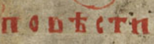

The Primary Chronicle was compiled in Kyiv in 1037-1040.
Nestor is one of most famous scribes of the Primary Chronicle
The Primary Chronicle follows the conventions of hagiography.
See for example lives of SS Boris and Gleb, the sons of St. Vladimir.
They know that they will get killed but follow self-sacrificsing model life of JS.
Serge Zenkovsvky notes that Eastern Orthodox saints follow kenotic model of sainthood.
Greek word kenosis means 'self-emptying' of one's own will and becoming entirely receptive to God and the divine will.
The Russian word for Chronicle is Letopis' (Летопись).
The Russian title of the Primary Chronicle is "Повесть временных лет"
